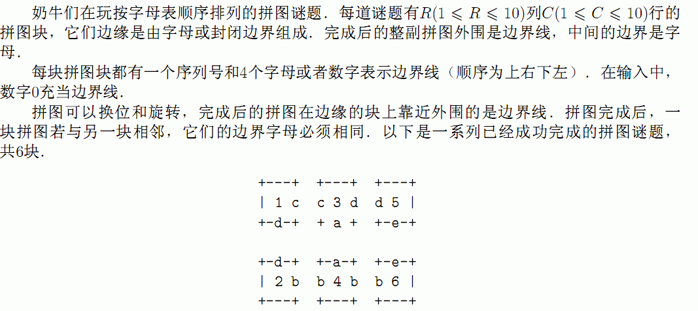
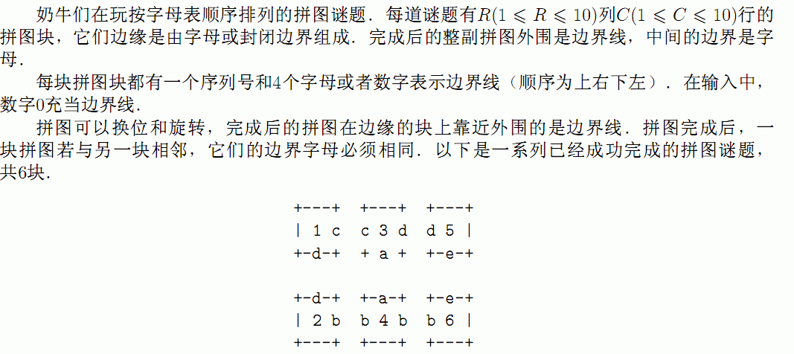

| F.A.Qs | Home | Discuss | ProblemSet | Status | Ranklist | Contest | 入门OJ | ModifyUser Xeonacid | Logout | 捐赠本站 |
|---|
| F.A.Qs | Home | Discuss | ProblemSet | Status | Ranklist | Contest | 入门OJ | ModifyUser Xeonacid | Logout | 捐赠本站 |
|---|

第1行是两个整数R和C，用空格隔开．从第2行到第RxC+I行，每一行包含1个数字和4个代表边界的符号（可以是字母或数字0）．
输出换位及旋转后的拼图．共RxC行，每行第一个数字代表第几块拼图块，后面四个字符，按顺序代表4个边界字母（边界线仍用0表示）．
答案可能有多组，输出一组即可．
请不要提交!